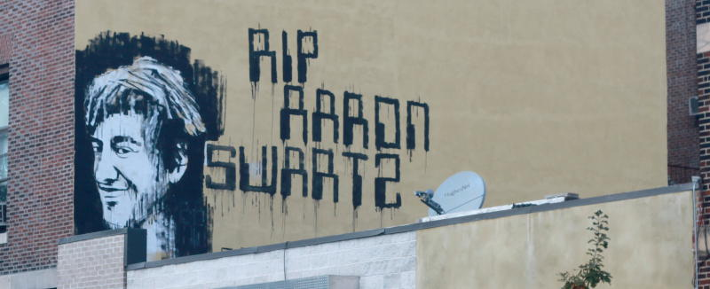

Aaron Swartz Hackathon

Inspired by the work he did and the people he touched, we are organizing recurring hackathons at locations all over the world in memory of Aaron Swartz. The next set will be synchronized on the weekend of November 8-10, 2013. The event will bring together the varied communities that Aaron touched to figure out how the important problems of the world connect, and to share the load of working on those problems.
The November 8-10 hackathon series is being coordinated on this wiki page.
The NYC Event
We will host the event 18:00 Friday to 20:00 Saturday at the Pfizer building at 630 Flushing Ave in Brooklyn:
View Larger Map
Schedule
Friday will be dedicated to the exploration and examination of the NYC groups Aaron has touched. A few curated talks will lead the evening, with lots of time for breakout sessions for more in-depth examination of projects and communities. Please mail nyc-org@aaronswartzhackathon.org if you would like to present on Friday.
Projects
Projects for all locations are listed on the Noisebridge wiki. We are still organizing projects for NYC.
Attending
If you'd like to attend (and we hope you do), you can of course just show up. To be in the loop for updates and with other attendees, please send a listserv request to the NYC Mailing list.
If you'd like to give a talk, lead a session, be a community lead, or host a project, please send a 150 x 150 pixel image and a tweet-sized summary to nyc-org@aaronswartzhackathon.org to be listed on this page, or fork the git and do so for yourself.
Other Logistics
Bring some money for food and coffee. There are places nearby to eat. If you'd like to foot the bill for a meal or snacks, anonymously or otherwise, please email nyc-org@aaronswartzhackathon.org
Laptops are encouraged for for whom that is their tool. Pens, paper, soldering irons, knitting needles, and other bits are all highly encouraged. We'll have power to plug yourselves into and wireless.
We want people who express themselves through code, through art, through words, through anything at all. We want to hear your voice, and to add it to the chorus.
Our tag will be #aarownswnyc